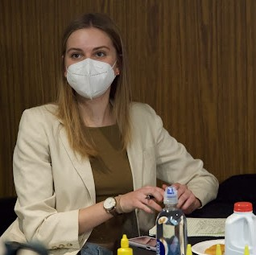

Vice President of the Society of Women in Computer Science

Social media manager and executive for UVM TV
Leader of Twilight Book Club

Creator of Award Winning short film, Pair of Dice

Winner of Mariafranca Morselli Leadership Award

Member of CS Crew

Winner of the 2022 Outstanding Sophomore Award
Member of a semi-successful intramural floor hockey team

Member of a semi-successful intramural floor hockey team
Made some amazing friends and created the first Friendship Awards


Participant in the HCOL kickball tournament

CS Fair Instagram takeover of the @universityofvermont account